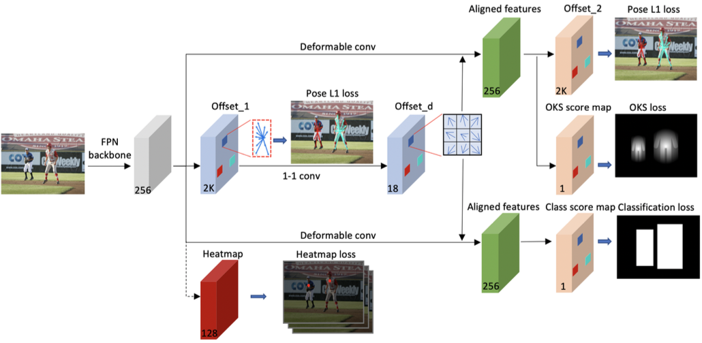

H-index: 23 | Google citation | DBLP | Research Gate
2026
-

Xingguo Xu, Zhanyu Liu, Weixiang Zhou, Yuansheng Gao, Junjie Cao*, Yuhao Wang*, Jixiang Luo, Dell Zhang. STMI: Segmentation-Guided Token Modulation with Cross-Modal Hypergraph Interaction for Multi-Modal Object Re-Identification. AAAI 2026. (Accept rate: 17.6%) (CCF A, Top)
2025
-
Kaichen Yang, Junjie Cao, Zeyu Bai, Zhixun Su, and Andrea Tagliasacchi. PIAD: Pose and Illumination agnostic Anomaly Detection, CVPR 2025. (Accept rate: 22%) (CCF A, Top)
-
Jie Zhang, Minghui Nie,Changqing Zou, Jian Liu, Ligang Liu, and Junjie Cao*. PointNorm-Net: Self-Supervised Normal Prediction of 3D Point Clouds via Multi-Modal Distribution Estimation. IEEE Transactions on Pattern Analysis and Machine Intelligence, vol. 47, no. 08, pp. 6515-6530, Aug, 2025. (CAS 1, Top; CCF A)
-
Bo Li, Xiaolin Wei, Bin Liu*, Zhifei He, Junjie Cao and Yu-Kun Lai. Pose-Aware 3D Talking Face Synthesis using Geometry-guided Audio-Vertices Attention, IEEE Transactions on Visualization and Computer Graphics, vol. 31, no. 03, pp. 1758-1771, Mar, 2025. (CAS 2, Top; CCF A)
2024
-

Ma, Y., Yue, Z., Wang, Y., Liu, R., Su, Z., Junjie Cao*. [LAPRNet: Lightweight Airborne Particle Removal Network for LiDAR Point Clouds], Image and Video Technology, PSIVT 2023, Lecture Notes in Computer Science, vol 14403, 2024. (EI)
2023
-
Bin Liu, Bo Li*, Junjie Cao, Weiming Wang, and Xiuping Liu. Adaptive and Propagated Mesh Filtering, COMPUTER-AIDED DESIGN, Volume 154, 2023. (CAS 3; CCF B)
-

Junqi Lin, Huixin Miao (co-first author), Junjie Cao*, Zhixun Su, Risheng Liu. SMPR: Single-Stage Multi-Person Pose Regression. Pattern Recognition, Volume 143, 2023. (CAS 1, top; CCF B) [Multi-Person Pose Estimation on COCO test-dev]
2022
-
Junjie Cao, Hairui Zhu, Yunpeng Bai, Jun Zhou*, Jinshan Pan and Zhixun. Latent Tangent Space Representation for Normal Estimation, IEEE Transactions on Industrial Electronics, 2022, 69(1), 921-929. (CAS 1, Top; CAA A)
-
Shiyao Wang, Xiuping Liu, Jian Liu, Shuhua Li, Junjie Cao*. Deep Patch-based Global Normal Orientation, COMPUTER-AIDED DESIGN, vol. 150, 2022. (CAS 3; CCF B)
-
Jie Zhang, Junjie Cao*, Hai-Rui Zhu, Dong-Ming Yan, Xiu-Ping Liu. Geometry Guided Deep Surface Normal Estimation, COMPUTER-AIDED DESIGN, Volume 142, 2022. (CAS 3; CCF B)
-
Hui Wang, Jiahao Song, Boxu Ding, Peng He, Junjie Cao*. Human Action Recognition of Triangle Mesh Sequence Representation. 计算机辅助设计与图形学学报, 2022, 34(11): 1723-1730. (CCF T1; EI)
Hui Wang, Bitao Ma, Junjie Cao, Xiuping Liu, Hui Huang*. Deep functional maps for simultaneously computing direct and symmetric correspondences of 3D shapes. Graphical Models, 123, 2022, (CAS 4; CCF B)
2021
-
Jie Zhang*, Jian Liu, Xiuping Liu, Jiang Wei, Junjie Cao, Kewei Tang. Feature interpolation convolution for point cloud analysis. Computers & Graphics, 2021, 99, 182-191. (CAS 3; CCF C)
2019
-
Jie Zhang, Junjie Cao (co-first authors), Xiuping Liu*, He Chen, Bo Li, Ligang Liu. Multi-Normal Estimation via Pair Consistency Voting. IEEE Transactions on Visualization and Computer Graphics, 25(4), 2019, 1693-1706. (CAS 2, Top; CCF A)
-
Xiuping Liu*, Hongchen Tan, Xin Tong, Junjie Cao, Jun Zhou, Feature Preserving GAN and multi-scale Feature Enhancement for Domain Adaption Person Re-identification, Neurocomputing, vol. 364, 2019, pp. 108-118. (CCF C, JCR2)
Shuhua Li, Xiuping Liu*, Junjie Cao, Shiyao Wang, Organic skeleton correspondence using part arrangements, Applied Mathematics-A Journal of Chinese Universities, 34(3), 2019, 326–339. (SCI, 0.806) (CAS 4; JCR2)
Cao J., Pan R., Wang L., Xu X., Su Z. (2019) Shoeprint Extraction via GAN. PSIVT 2019: Image and Video Technology. Lecture Notes in Computer Science, vol 11854, pp 379-389. [EI]
2018
-
Junjie Cao, He Chen, Jie Zhang*, Yujiao Li, Xiuping Liu, Changqing Zou. Normal Estimation via Shifted Neighborhood for point cloud. Journal of Computational and Applied Mathematics, 2018, 329, 57-67. (CAS 2, Top)
-
Bo Li, Risheng Liu, Junjie Cao*, Jie Zhang, Yu-Kun Lai, Xiuping Liu. Online Low-Rank Representation Learning for Joint Multi-subspace Recovery and Clustering. IEEE Transactions on Image Processing, 2018, 27(1), 335-348. (CAS 1, TOP; CCF A)
-

Jun Zhou, Xiuping Liu*, Junjie Cao, Weiming Wang, Baocai Yin. Deep Mesh Labeling via Learned Semantic Boundary Guidance. Computer-Aided Design, 2018, 101, 72-81. (CAS 3; CCF B)
-
Bin Liu, Junjie Cao, Weiming Wang, Ning Ma, Bo Li, Ligang Liu, Xiuping Liu*. Propagated Mesh Normal Filtering. Computers & Graphics, 74 (2018) 119–125. (CAS 3; CCF C)
2017
-

Junjie Cao, Jie Zhang, Zhijie Wen*, Nannan Wang, Xiuping Liu*. "Fabric Defect Inspection using Prior Knowledge Guided Least Squares Regression", Multimedia Tools and Applications, 2017, 76(3), 4141-4157. [ PDF | Project page]. (CAS 4; CCF C)
-
Junjie Cao, Jun Zhou, Xiuping Liu*, Weiming Wang, Pingping Tao, Jun Wang. Low-rank image completion with entropy features. Machine Vision and Applications, 2017, 28(1), 129-139. (CAS 4; CCF C)
-
Cao Junjie*, Wang Nannan, Leng Jiacheng, Wang Hui and Yang Yunfeng. Non-local Joint Texture Removing Based on Patch Shift. 计算机辅助设计与图形学学报, 2017, 29 (9): 1635-1642. (CCF T1; EI)
2016
-
Changqing Zou*, Junjie Cao*, Warunika Ranaweera, Ibraheem Alhashim, Ping Tan, Alla Sheffer, Hao Zhang, "Legible Compact Calligrams", ACM Trans. on Graphics (Special Issue of SIGGRAPH), Vol. 35, No. 4, Article 122, 2016. [PDF | bibtex] (CAS 1, TOP; CCF A)
-
Risheng Liu*, Guangyu Zhong, Junjie Cao, Zhouchen Lin, Shiguang Shan, Zhongxuan Luo, "Learning to Diffuse: A New Perspective to Design PDEs for Visual Analysis", IEEE Transactions on Pattern Analysis and Machine Intelligence, 38(12), 2457-2471, 2016. [Project page ]. (CAS 1, TOP; CCF A)
-
Junjie Cao, Nannan Wang, Jie Zhang, Bo Li, Zhijie Wen*, Xiuping Liu*. "Detection of varied defects in diverse fabric images via modified RPCA with noise term and defect prior", International Journal of Clothing Science and Technology, 2016, 28(4), 516-529. [Project page]. (CAS 4)
-
Xiuping Liu, Pingping Tao, Junjie Cao*, He Chen, Changqing Zou. "Mesh saliency detection via double absorbing Markov chain in feature space", The Visual Computer, 2016, 32(9), 1121-1132. [PDF] (CCF C)
-
Guangyu Zhong, Risheng Liu, Junjie Cao*, Zhixun Su. "A generalized nonlocal mean framework with object-level cues for saliency detection", The Visual Computer, 32(5), 611-623, 2016. [Project page] (CCF C)
-
Yusong Liu, Zhixun Su*, Junjie Cao, Hui Wang. "Harmonic mean normalized Laplace–Beltrami spectral descriptor", The Visual Computer, 32(5), 611-623, 2016. [PDF](CCF C)
2015
-

Ibraheem Alhashim, Kai Xu, Yixin Zhuang, Junjie Cao, Patricio Simari, and Hao Zhang, "Deformation-Driven Topology-Varying 3D Shape Correspondence", ACM Trans. on Graphics (Special Issue of SIGGRAPH Asia), Vol. 34, No. 6, Article 236, 2015. [PDF (20 MB) | PDF reduced (12 MB) | Project page | bibtex]. (CAS 1, TOP; CCF A)
-
Xiuping Liu, Jie Zhang, Junjie Cao*, Bo Li, Ligang Liu. "Quality Point Cloud Normal Estimation by Guided Least Squares Representation", Computers & Graphics, 2015, 46, 106-116. (CAS 3; CCF C)
-

Xiuping Liu, Jie Zhang, Risheng Liu, Bo Li, Jun Wang, Junjie Cao*. "Low-rank 3D Mesh Segmentation and Labeling with Structure Guiding", Computers & Graphics (Special Issue of SMI 2014), 2015, 46, 106-116. (CAS 3; CCF C)
-

Xiuping Liu, Shuhua Li, Risheng Liu, Jun Wang, Hui Wang*, Junjie Cao*. Properly-constrained Orthonormal Functional Maps for Intrinsic Symmetries", Computers & Graphics (Special Issue of SMI 2014), 2015, 46, 198-208. (CAS 3; CCF C). [project]
-
Pingping Tao, Junjie Cao*, Shuhua Li, Xiuping Liu, Ligang Liu. "Mesh Saliency via Ranking Unsalient Patches in a Descriptor Space", Computers & Graphics (Special Issue of SMI 2014), 2015, 46, 264-274. (CAS 3; CCF C)
-
Zhiyang Li, Wenyu Qu*, Junjie Cao, Heng Qi, Milos Stojmenovic. "ECDS: An effective shape signature using electrical charge distribution on the shape", Pattern Recognition, 2015, 48(2), 402-410. (CAS 1, TOP; CCF B)
-
Risheng Liu*, Guangyu Zhong, Junjie Cao, Zhixun Su. "Diffuse Visual Attention for Saliency Detection", Journal of Electronic Imaging, 2015, 24(1), 13-23. (CAS 4)
Junjie Cao, Shuhua Li, Xiuping Liu. Functional Maps with Well Spread-out Constraints. Journal of Information & Computational Science. 2015, 12 (12), 4531- 4538. (EI)
Baochang Han, Junjie Cao, Zhixun Su*. Automatic Point Clouds Registration Based on Regions. 计算机辅助设计与图形学学报. 2015, 27(2): 313-319. (CCF T1; EI)
Hui Wang, Junjie Cao, Xiuping Liu*, Jianmin Wang, Tongrang Fan, Jianping Hu. Least-square images for edge-preserving smoothing, Computational Visual Media, 2015, 1(1): 27-35. (CAS 2; CCF 3)
2014
-
Ibraheem Alhashim, Honghua Li, Kai Xu, Junjie Cao, Rui Ma, and Hao Zhang, "Topology-Varying 3D Shape Creation via Structural Blending", ACM Trans. on Graphics (Special Issue of SIGGRAPH), Vol. 33, No. 4, Article 158, 2014. [Project page | PDF | bibtex]. (CAS 1, TOP; CCF A)
div class="clear">

Risheng Liu*, Junjie Cao, Zhouchen Lin, Shiguang Shan. "Adaptive Partial Differential Equation Learning for Visual Saliency Detection", IEEE International Conference on Computer Vision and Pattern Recognition (CVPR), 3866-3873, 2014. (Oral, Accept rate: 5.75%) (CCF A; TOP) [PDF | Project page].
Jian Liu, Junjie Cao*, Xiuping Liu, Jun Wang, XiaoChao Wang, Xiquan Shi. "Mendable consistent orientation of point clouds", Computer-Aided Design, 2014, 55: 26-36. [ Project page] (CAS 3; CCF B)
Zhijie Wen*, Junjie Cao, Xiuping Liu, Shihui Ying. "Fabric defects detection using adaptive wavelets", International Journal of Clothing Science and Technology, 2014, 26(3): 202 - 211. (CAS 4)
Nannan Li, Junjie Cao, Peng Wang, Hui Wang, Zhixun Su*, Bo Li. Reweighted Global Bilateral Filtering Based on Normal Regularization. Journal of Computer Aided Design & Computer Graphics, 2014, 26 (3): 370-377. (CCF T1; EI)
Peng Wang, Shengfa Wang, Junjie Cao, Nannan Li, Zhixun Su*. The application of l1-optimization in mesh denoising. 中国图象图形学报. 2014,19 (4): 637-644. (CCF T2)
2013
-
Jie Zhang, Junjie Cao*, Xiuping Liu, Jun Wang, Jian Liu, Xiquan Shi. "Point cloud normal estimation via low-rank subspace clustering", Computer & Graphics (Special issue of SMI), 2013, 37(6): 697-706. [ Project page] (CAS 3; CCF C)
-
Honghua Li, Hao Zhang, Yanzhen Wang, Junjie Cao, Ariel Shamir, Daniel Cohen-Or. "Curve Style Analysis in a Set of Shapes", Computer Graphics Forum, 2013, 32(6), 77-88. (CAS 4; CCF B)
-
Jun Wang, Zeyun Yu, Weidong Zhu, Junjie Cao. "Feature-Preserving Surface Reconstruction from Unoriented, Noisy Point Data", Computer Graphics Forum, 2013, 32(1), 164-176. (CAS 4; CCF B)
Jun Wang*, Kai Xu, Ligang Liu, Junjie Cao, Shengjun Liu, Zeyun Yu, Xianfeng Gu. Consolidation of Low-quality Point Clouds from Outdoor Scenes. Computer Graphics Forum (SGP 2013), 32(5), 207-216. (CAS 4; CCF B)
-
Zhenzhen Zhang, Junjie Cao*, Guangyu Zhong, Wangyi Liu, Zhixun Su. "Object Level Image Saliency by Hierarchical Segmentation", ICIP 2013. (CCF C)
2012
-
Hui Wang, Zhixun Zu, Junjie Cao, Ye Wang, and Hao Zhang. "Empirical Mode Decomposition on Surfaces", Graphical Models (Special Issue of GMP), 2012, 74(4): 173–183. (SCI)
-
Xiaochao Wang, Junjie Cao, Xiuping Liu, Baojun Li, Xiquan Shi, Yizhen Sun. "Feature detection on triangular meshes via neighbor supporting", Journal of Zhejiang University-SCIENCE C (Computers & Electronics), 2012, 13(6), 440-451. (SCI)
2011
-

Junjie Cao*, Ying He, Zhiyang Li, Xiuping Liu, Zhixun Su. Orienting Raw Point Sets by Global Contraction and Visibility Voting, Computer & Graphics (Special Issue of SMI 2011), 2011. [Project page] (SCI, IF: 1.029) (CCF C)
-
Yuandi Zhao, Junjie Cao, Zhixun Su, Zhiyang Li. "Efficient Reconstruction of Non-simple Curves", ournal of Zhejiang University - SCIENCE C, 2011. (SCI)
2010
-
Junjie Cao, Andrea Tagliasacchi, Matt Olson Hao Zhang, and Zhixun Su. "Point Cloud Skeletons via Laplacian-Based Contraction", Proc. of IEEE Shape Modeling International, 187-19, 2010. [PDF | Project page | bibtex]. (Cited by 103)
-
Junjie Cao, Zhixun Su, Xiuping Liu, Haichuan Bi. "Measured Boundary Parameterization Based on Poisson Equation", ournal of Zhejiang University - SCIENCE C, 11(3), 187-198, 2010. (SCI)
2009
- ...